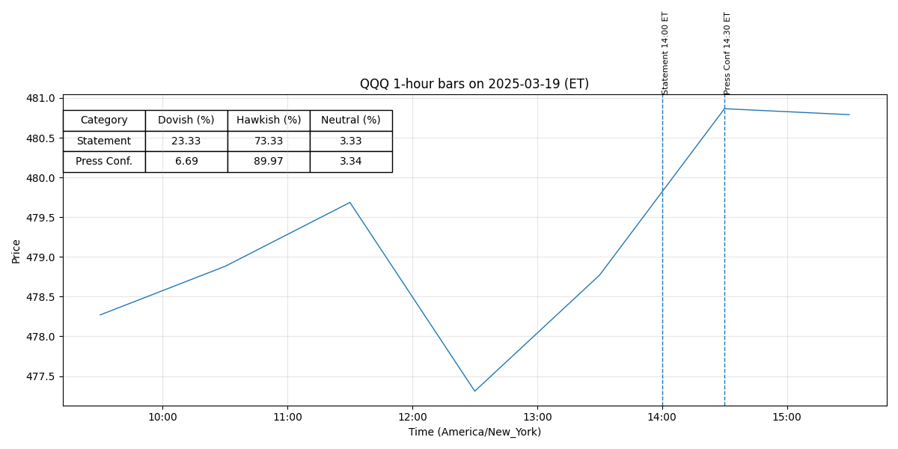

For release at 2:00 p.m. EDT May 7, 2025 Although swings in net exports have affected the data, recent indicators suggest that economic activity has continued to expand at a solid pace. (0.408)
The unemployment rate has stabilized at a low level in recent months, and labor market conditions remain solid. (0.429)
Inflation remains somewhat elevated. (0.551)
Uncertainty about the economic outlook has increased further. (0.402)
The Committee is attentive to the risks to both sides of its dual mandate and judges that the risks of higher unemployment and higher inflation have risen. (0.356)
The Committee is strongly committed to supporting maximum employment and returning inflation to its 2 percent objective. (0.551)
The Committee would be prepared to adjust the stance of monetary policy as appropriate if risks emerge that could impede the attainment of the Committee’s goals. (0.721)
The Committee’s assessments will take (more) -2- into account a wide range of information, including readings on labor market conditions, inflation pressures and inflation expectations, and financial and international developments. (0.548)
Voting for the monetary policy action were Jerome H. Powell, Chair; John C. Williams, Vice Chair; Michael S. Barr; Michelle W. Bowman; Susan M. Collins; Lisa D. Cook; Austan D. Goolsbee; Philip N. Jefferson; Neel Kashkari; Adriana D. Kugler; Alberto G. Musalem; and Christopher J. Waller. (0.789)
Neel Kashkari voted as an alternate member at this meeting. (0.536)
For release at 2:00 p.m. EDT May 7, 2025 Decisions Regarding Monetary Policy Implementation The Federal Reserve has made the following decisions to implement the monetary policy stance announced by the Federal Open Market Committee in its statement on May 7, 2025: • The Board of Governors of the Federal Reserve System voted unanimously to maintain the interest rate paid on reserve balances at 4.4 percent, effective May 8, 2025. (0.505)
• As part of its policy decision, the Federal Open Market Committee voted to direct the Open Market Desk at the Federal Reserve Bank of New York, until instructed otherwise, to execute transactions in the System Open Market Account in accordance with the following domestic policy directive: "Effective May 8, 2025, the Federal Open Market Committee directs the Desk to: (0.515)
Conduct standing overnight repurchase agreement operations with a minimum bid o rate of 4.5 percent and with an aggregate operation limit of $500 billion. (0.722)
Conduct standing overnight reverse repurchase agreement operations at an o offering rate of 4.25 percent and with a per-counterparty limit of $160 billion per day. (0.757)
Roll over at auction the amount of principal payments from the Federal Reserve's o holdings of Treasury securities maturing in each calendar month that exceeds a cap of $5 billion per month. (0.514)
Redeem Treasury coupon securities up to this monthly cap and Treasury bills to the extent that coupon principal payments are less than the monthly cap. (0.398)
Reinvest the amount of principal payments from the Federal Reserve's holdings of o agency debt and agency mortgage-backed securities (MBS) received in each calendar month that exceeds a cap of $35 billion per month into Treasury securities to roughly match the maturity composition of Treasury securities outstanding. (0.536)
Allow modest deviations from stated amounts for reinvestments, if needed for o operational reasons."" (0.774)
For release at 2:00 p.m. EDT March 19, 2025
Recent indicators suggest that economic activity has continued to expand at a solid pace. (0.448)
The unemployment rate has stabilized at a low level in recent months, and labor market
conditions remain solid. (0.429)
Inflation remains somewhat elevated. (0.551)
Uncertainty around the economic outlook has increased. (0.475)
The
Committee is attentive to the risks to both sides of its dual mandate. (0.602)
Beginning in April, the Committee will slow the pace of decline of its securities
holdings by reducing the monthly redemption cap on Treasury securities from $25 billion to
$5 billion. (0.597)
The Committee will maintain the monthly redemption cap on agency debt and agency
mortgage-backed securities at $35 billion. (0.672)
The Committee is strongly committed to supporting
maximum employment and returning inflation to its 2 percent objective. (0.551)
The Committee
would be prepared to adjust the stance of monetary policy as appropriate if risks emerge that
(more)
-2-
could impede the attainment of the Committee’s goals. (0.714)
The Committee’s assessments will take
into account a wide range of information, including readings on labor market conditions,
inflation pressures and inflation expectations, and financial and international developments. (0.536)
Voting for the monetary policy action were Jerome H. Powell, Chair; John C. Williams,
Vice Chair; Michael S. Barr; Michelle W. Bowman; Susan M. Collins; Lisa D. Cook; Austan D.
Goolsbee; Philip N. Jefferson; Adriana D. Kugler; Alberto G. Musalem; and Jeffrey R. Schmid. (0.790)
Voting against this action was Christopher J. Waller, who supported no change for the federal
funds target range but preferred to continue the current pace of decline in securities holdings. (0.592)
For release at 2:00 p.m. EDT March 19, 2025
Decisions Regarding Monetary Policy Implementation
The Federal Reserve has made the following decisions to implement the monetary policy stance
announced by the Federal Open Market Committee in its statement on March 19, 2025:
• The Board of Governors of the Federal Reserve System voted unanimously to maintain the
interest rate paid on reserve balances at 4.4 percent, effective March 20, 2025. (0.513)
• As part of its policy decision, the Federal Open Market Committee voted to direct the Open
Market Desk at the Federal Reserve Bank of New York, until instructed otherwise, to
execute transactions in the System Open Market Account in accordance with the following
domestic policy directive:
"Effective March 20, 2025, the Federal Open Market Committee directs the Desk to: (0.518)
o Conduct standing overnight repurchase agreement operations with a minimum bid
rate of 4.5 percent and with an aggregate operation limit of $500 billion. (0.728)
o Conduct standing overnight reverse repurchase agreement operations at an
offering rate of 4.25 percent and with a per-counterparty limit of $160 billion per
day. (0.756)
o Roll over at auction the amount of principal payments from the Federal Reserve's
holdings of Treasury securities maturing in March that exceeds a cap of
$25 billion per month. (0.536)
Beginning on April 1, roll over at auction the amount of
principal payments from the Federal Reserve's holdings of Treasury securities
maturing in each calendar month that exceeds a cap of $5 billion per month. (0.535)
Redeem Treasury coupon securities up to these monthly caps and Treasury bills to
the extent that coupon principal payments are less than the monthly caps. (0.405)
o Reinvest the amount of principal payments from the Federal Reserve's holdings of
agency debt and agency mortgage-backed securities (MBS) received in each
calendar month that exceeds a cap of $35 billion per month into Treasury
securities to roughly match the maturity composition of Treasury securities
outstanding. (0.545)
o Allow modest deviations from stated amounts for reinvestments, if needed for
operational reasons.” (0.761)
The Committee seeks to achieve maximum employment and inflation at the rate of 2 percent over the longer run. (0.612)
In support of its goals, the Committee decided to maintain the target range for the federal funds rate at 4-1/4 to 4-1/2 percent. (0.512)
In considering the extent and timing of additional adjustments to the target range for the federal funds rate, the Committee will carefully assess incoming data, the evolving outlook, and the balance of risks. (0.420)
The Committee will continue reducing its holdings of Treasury securities and agency debt and agency mortgage‑backed securities. (0.610)
In assessing the appropriate stance of monetary policy, the Committee will continue to monitor the implications of incoming information for the economic outlook. (0.775)
-0- Attachment For media inquiries, please email media@frb.gov or call 202-452-2955. (0.646)
• In a related action, the Board of Governors of the Federal Reserve System voted unanimously to approve the establishment of the primary credit rate at the existing level of 4.5 percent. (0.559)
(more) -2- This information will be updated as appropriate to reflect decisions of the Federal Open Market Committee or the Board of Governors regarding details of the Federal Reserve's operational tools and approach used to implement monetary policy. (0.625)
More information regarding open market operations and reinvestments may be found on the Federal Reserve Bank of New York's website. (0.801)